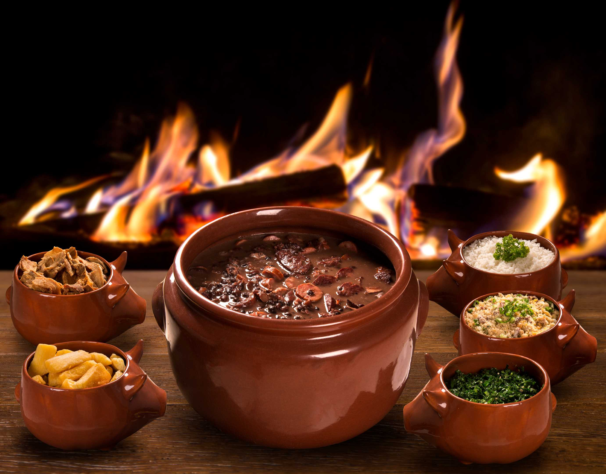

Ingredientes
- 500g de feijão preto
- 300g de carne seca
- 200g de linguiça calabresa em rodelas
- 200g de costelinha de porco salgada
- 100g de bacon em cubos
- 2 folhas de louro
- 2 dentes de alho picados
- 1 cebola picada
- Sal e pimenta-do-reino a gosto
- Água para cozinhar
Modo de Preparo
- Deixe o feijão de molho em água por pelo menos 12 horas. Escorra e reserve.
- Desalgue a carne seca e a costelinha, deixando-as de molho em água por algumas horas e trocando a água regularmente.
- Em uma panela grande, refogue o bacon até soltar gordura, depois adicione a cebola e o alho.
- Adicione o feijão, as carnes, a linguiça, as folhas de louro e cubra com água.
- Cozinhe em fogo baixo por cerca de 2 horas, ou até que o feijão e as carnes estejam macios.
- Ajuste o tempero com sal e pimenta-do-reino. Sirva acompanhado de arroz branco, farofa e couve refogada.